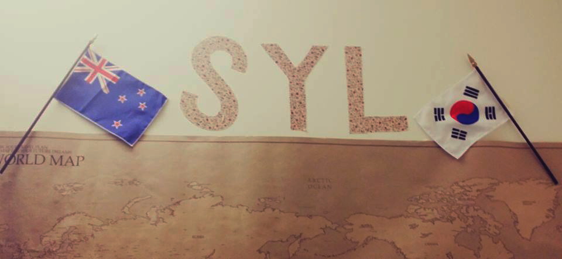

From Korea to the States: Politics doesn’t change
(2016. nov 2.)
Su Young Lee has had quite the life. She still hasn’t graduated from college, but already lived in three countries, seen half of the world, and also travelled a lot. She is still relatively new to the United States, but plans her life here for the long run.
Q: Does your name have a meaning or story behind it?
A: My full name is Su Young Lee, and it does, because every Korean name has Chinese characters assigned to it, and those usually have a comprehensive meaning. The ones that make up my name mean name “maintain your honor”. It is a unisex name, and I was going to be named this whether I was going to be a boy or a girl. They didn’t want to tell it to my mother before time, because in Korea, much like in a lot of Asian countries, people don’t really want girls.
Q: How long were you living in Korea?
A: I lived in Korea for the first seven years of my life, then I moved to New Zealand, where I lived till I was eighteen. I moved to the States after I graduated from high school and now I am here on a student visa, that I want to extend after college.
Q: Can you say that any of these places was your favorite?
A: Experience-wise, I would say my favorite place was New Zealand, but I wouldn’t want to live there again. I don’t feel like these places were culturally very different, because nowadays every place is americanized to some extent. It might be just a New York thing, but I find that people are less friendly here than they are elsewhere. Nevertheless, I plan to stay for a long time after I have graduated, perhaps forever.
Q: Are you looking forward to vote in this country?
A: I wouldn’t say I am. I have never voted in my entire life, and it’s not something I’m enthusiastic to do. I would say that politically I am left-leaning, but really, my stance will depend on the candidates.
Q: What do you think about the current candidates? How does this election compare to the ones you lived through?
A: I have no previous knowledge of American politics, so I find it quite interesting. I wouldn’t know whether it’s a crazy election compared to the last ones, but I see that it is crazy on its own terms. I don’t think though that this craziness is strange. People went crazy over the elections in Korea. I remember when they elected their first female president, there was a lot of controversy. I feel that is exactly what is happening now here in the States. US politics is only special because the amount of media coverage it receives. It entertains more people.
Instagram